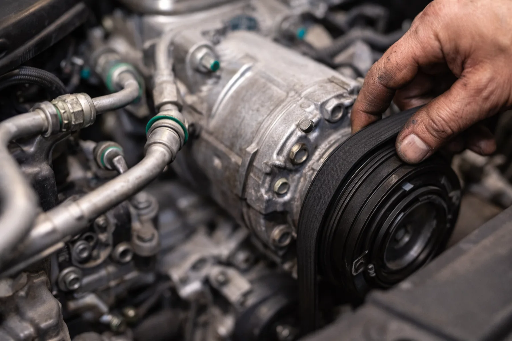

Votre clim souffle tiède ? Mauvaises odeurs quand vous l'allumez ? Bruit suspect ? Chez DMT AUTOGROUP, on fait la recharge, la réparation et la désinfection de votre climatisation auto. R134a et R1234yf. Toutes marques. Diagnostic clim offert avec chaque recharge. Blaast uw airco lauw? Vieze geur als u hem aanzet? Verdacht geluid? Bij DMT AUTOGROUP doen we het bijvullen, herstellen en desinfecteren van uw autoairco. R134a en R1234yf. Alle merken. Gratis aircodiagnose bij elke bijvulling.
Votre clim ne refroidit plus comme avant. Vous montez le ventilateur à fond, vous baissez la température au minimum, et l'air qui sort est tiède. Peut-être même chaud. C'est le signe le plus courant : le gaz réfrigérant est en dessous du niveau nécessaire. Uw airco koelt niet meer zoals vroeger. U zet de ventilator op volle kracht, draait de temperatuur helemaal omlaag, en de lucht die eruit komt is lauw. Misschien zelfs warm. Het is het meest voorkomende teken: het koelmiddel zit onder het noodzakelijke niveau.
Ce n'est pas un défaut. Le circuit de clim perd naturellement 10 à 15% de gaz par an — par les joints toriques, les raccords, les flexibles. Après 2 à 3 ans, il n'y a plus assez de gaz pour que le compresseur puisse travailler correctement. Le système se met en sécurité et le compresseur ne s'enclenche plus. Het is geen defect. Het aircosysteem verliest van nature 10 tot 15% gas per jaar — via de O-ringen, aansluitingen, slangen. Na 2 tot 3 jaar is er niet genoeg gas meer om de compressor goed te laten werken. Het systeem schakelt zichzelf uit en de compressor slaat niet meer aan.
On utilise une station de recharge automatique qui vide le circuit, récupère le gaz restant, tire au vide pour éliminer l'humidité, et recharge avec la quantité exacte prescrite par le constructeur — au gramme près. On ajoute aussi de l'huile de compresseur et un traceur UV pour détecter d'éventuelles fuites. We gebruiken een automatisch bijvulstation dat het circuit leegmaakt, het resterende gas recupereert, vacuüm trekt om vocht te verwijderen, en bijvult met de exacte hoeveelheid voorgeschreven door de constructeur — op de gram nauwkeurig. We voegen ook compressorolie en UV-tracer toe om eventuele lekken te detecteren.
Deux types de gaz existent aujourd'hui. Le R134a, utilisé sur les véhicules d'avant 2017 environ. Et le R1234yf, obligatoire sur les modèles récents. Le R1234yf est nettement plus cher — c'est le gaz qui fait la différence sur la facture, pas notre main-d'oeuvre. Chez un concessionnaire, une recharge R1234yf peut facilement dépasser 250-350 euros. Chez nous, c'est une autre histoire. Er bestaan vandaag twee types gas. R134a, gebruikt in voertuigen van voor 2017 ongeveer. En R1234yf, verplicht bij recente modellen. R1234yf is beduidend duurder — het is het gas dat het verschil maakt op de factuur, niet onze arbeid. Bij een concessie kan een R1234yf-bijvulling makkelijk boven de 250-350 euro uitkomen. Bij ons is dat een ander verhaal.

Si votre clim a besoin d'une recharge tous les 6 mois, le problème n'est pas le gaz. C'est une fuite. Et une fuite, ça ne se résout pas en remettant du gaz — c'est comme remplir un seau percé. Als uw airco om de 6 maanden bijgevuld moet worden, is het probleem niet het gas. Het is een lek. En een lek los je niet op door gas bij te vullen — dat is als een emmer met een gat vullen.
On localise les fuites avec un test UV. On ajoute un traceur fluorescent dans le circuit, on fait tourner la clim, et on inspecte chaque raccord, chaque joint, chaque composant avec une lampe UV. La fuite apparaît en jaune-vert fluorescent. Impossible de la rater. We lokaliseren lekken met een UV-test. We voegen een fluorescerend spoormiddel toe aan het circuit, laten de airco draaien, en inspecteren elke aansluiting, elke afdichting, elk onderdeel met een UV-lamp. Het lek verschijnt in fluorescerend geelgroen. Onmogelijk om te missen.
Les composants qu'on remplace le plus souvent : le compresseur (quand il bloque ou fuit au niveau du joint d'arbre), le condenseur (souvent percé par des gravillons ou de la corrosion — il est en première ligne derrière la calandre), l'évaporateur (la pièce la plus pénible à atteindre — il faut souvent démonter une partie du tableau de bord), et les flexibles haute/basse pression qui se dessèchent avec le temps. De onderdelen die we het vaakst vervangen: de compressor (als die blokkeert of lekt ter hoogte van de asdichting), de condensor (vaak doorboord door steentjes of corrosie — hij zit vooraan achter de grille), de verdamper (het lastigste onderdeel om bij te komen — vaak moet een deel van het dashboard gedemonteerd worden), en de hoge/lage druk slangen die na verloop van tijd uitdrogen.
Un compresseur de clim chez le concessionnaire, c'est facilement 800 à 1500 euros pièce et main-d'oeuvre. Chez un indépendant comme nous, le compresseur est le même (qualité OEM ou première monte), mais la facture est différente. On ne gonfle pas les prix. Een aircocompressor bij de concessie kost al snel 800 tot 1500 euro onderdelen en arbeid. Bij een onafhankelijke garage zoals wij is de compressor dezelfde (OEM-kwaliteit of eerste montage), maar de factuur is anders. We blazen de prijzen niet op.

Certains véhicules utilitaires sont livrés sans climatisation. Les versions de base des Berlingo, Partner, Kangoo, Transit, Sprinter — le constructeur les vend comme ça pour garder le prix catalogue bas. Et le patron qui achète une flotte de 5 camionnettes se retrouve avec des chauffeurs qui cuisent en été. Sommige bedrijfsvoertuigen worden zonder airco geleverd. De basisversies van de Berlingo, Partner, Kangoo, Transit, Sprinter — de constructeur verkoopt ze zo om de catalogusprijs laag te houden. En de baas die een vloot van 5 bestelwagens koopt, zit met chauffeurs die bakken in de zomer.
On installe des systèmes de climatisation complets sur les véhicules utilitaires et les anciens véhicules qui n'en sont pas équipés d'origine. Compresseur, condenseur, évaporateur, tuyauterie, commandes — tout le circuit. Ce n'est pas un bricolage avec un kit universel. On utilise les pièces prévues par le constructeur pour la version climatisée du même véhicule. We installeren volledige aircosystemen op bedrijfsvoertuigen en oudere voertuigen die er vanaf de fabriek niet mee uitgerust zijn. Compressor, condensor, verdamper, leidingen, bediening — het volledige circuit. Het is geen knutselwerk met een universele kit. We gebruiken de onderdelen die de constructeur voorziet voor de versie met airco van hetzelfde voertuig.
Le résultat est identique à une voiture sortie d'usine avec la clim. Même performance, même fiabilité, même intégration dans le tableau de bord. Vos chauffeurs vous remercieront. Het resultaat is identiek aan een auto die met airco uit de fabriek kwam. Dezelfde prestaties, dezelfde betrouwbaarheid, dezelfde integratie in het dashboard. Uw chauffeurs zullen u dankbaar zijn.
Vous allumez la clim et une odeur de moisi envahit l'habitacle. C'est un classique. L'évaporateur — cette espèce de radiateur caché derrière le tableau de bord — est constamment humide quand la clim tourne. L'eau de condensation stagne dans le bac de récupération. Et dans cet environnement chaud et humide, les bactéries et les moisissures font la fête. U zet de airco aan en een mufferige geur vult de cabine. Het is een klassieker. De verdamper — die soort radiator verborgen achter het dashboard — is constant vochtig als de airco draait. Het condenswater stagneert in de opvangbak. En in die warme, vochtige omgeving hebben bacteriën en schimmels vrij spel.
Ce n'est pas juste désagréable. C'est un problème de santé. Ces moisissures, vous les respirez — vous et vos passagers. Les personnes allergiques ou asthmatiques le sentent immédiatement. Même sans allergie, c'est irritant pour les voies respiratoires. Het is niet alleen vervelend. Het is een gezondheidsprobleem. Die schimmels ademt u in — u en uw passagiers. Mensen met allergie of astma merken het onmiddellijk. Zelfs zonder allergie is het irriterend voor de luchtwegen.
On traite le circuit avec un produit antibactérien professionnel qu'on nébulise directement dans le boîtier de ventilation. On nettoie le bac de condensation. Et on remplace le filtre habitacle — le filtre qui est censé retenir pollens, poussières et particules fines. Si votre filtre habitacle n'a pas été changé depuis plus d'un an, il fait partie du problème. We behandelen het circuit met een professioneel antibacterieel product dat we rechtstreeks in de ventilatiebox vernevelen. We reinigen de condensbak. En we vervangen het interieurfilter — het filter dat pollen, stof en fijn stof moet tegenhouden. Als uw interieurfilter al meer dan een jaar niet vervangen is, maakt het deel uit van het probleem.
Pensez-y aussi lors de votre vidange — on peut remplacer le filtre habitacle en même temps que le filtre à huile et le filtre à air. Tout en une visite. Denk er ook aan bij uw olieverversing — we kunnen het interieurfilter tegelijk vervangen met het oliefilter en het luchtfilter. Alles in één bezoek.
On recommande une désinfection une fois par an — idéalement au printemps, avant la saison chaude. Vos poumons vous diront merci. Et pour un entretien complet de votre véhicule, on gère tout dans la foulée. We raden een desinfectie aan één keer per jaar — idealiter in de lente, voor het warme seizoen. Uw longen zullen u dankbaar zijn. En voor een volledig onderhoud van uw voertuig regelen we alles meteen.
Dans 80% des cas, c'est un manque de gaz réfrigérant. Le circuit perd naturellement du gaz chaque année. Après 2-3 ans, le niveau est trop bas pour refroidir. Une recharge résout le problème. Si ça revient vite, il y a une fuite qu'on localise avec un test UV. In 80% van de gevallen is het een tekort aan koelmiddel. Het circuit verliest van nature elk jaar wat gas. Na 2-3 jaar is het niveau te laag om te koelen. Een bijvulling lost het probleem op. Als het snel terugkomt, is er een lek dat we opsporen met een UV-test.
Ça dépend du gaz : R134a (véhicules avant 2017) est moins cher que le R1234yf (véhicules récents). Chez un concessionnaire, la recharge R1234yf dépasse souvent 250-350 euros. Chez nous, c'est sensiblement moins. On vous donne le prix exact avant de commencer. Dat hangt af van het gas: R134a (voertuigen voor 2017) is goedkoper dan R1234yf (recente voertuigen). Bij een concessie komt een R1234yf-bijvulling vaak boven 250-350 euro. Bij ons is dat merkbaar goedkoper. We geven u de exacte prijs voor we beginnen.
Tous les 2 ans en moyenne. Le circuit perd 10-15% de gaz par an via les joints et raccords. Si vous devez recharger tous les 6 mois, c'est qu'il y a une fuite à réparer — recharger sans réparer, c'est jeter de l'argent. Gemiddeld om de 2 jaar. Het circuit verliest 10-15% gas per jaar via afdichtingen en aansluitingen. Als u om de 6 maanden moet bijvullen, is er een lek dat hersteld moet worden — bijvullen zonder te repareren is geld weggooien.
Un petit clac à l'enclenchement, c'est normal — c'est l'embrayage du compresseur. Mais un sifflement continu, un grincement ou un bruit de roulement quand la clim tourne, ça peut être un compresseur en fin de vie ou une courroie usée. Faites vérifier avant qu'il ne bloque complètement. Een klikje bij het inschakelen is normaal — dat is de koppeling van de compressor. Maar een aanhoudend gesis, geknars of lagergeluid wanneer de airco draait, kan wijzen op een compressor die op is of een versleten riem. Laat het controleren voor hij volledig blokkeert.
L'odeur de moisi, c'est des bactéries et des moisissures sur l'évaporateur. L'humidité stagne dans le boîtier de ventilation. Une désinfection du circuit et un remplacement du filtre habitacle règlent le problème. On recommande de le faire une fois par an, de préférence au printemps. Die mufferige geur komt van bacteriën en schimmels op de verdamper. Het vocht stagneert in de ventilatiekast. Een desinfectie van het circuit en een nieuw interieurfilter lossen het probleem op. We raden aan om dit één keer per jaar te doen, bij voorkeur in de lente.
Recharge clim R134a / R1234yf — Toutes marques
Lundi — Vendredi · 08:30 — 18:00
Mechelsesteenweg 270, 1933 ZaventemAirco bijvulling R134a / R1234yf — Alle merken
Maandag — Vrijdag · 08:30 — 18:00
Mechelsesteenweg 270, 1933 Zaventem